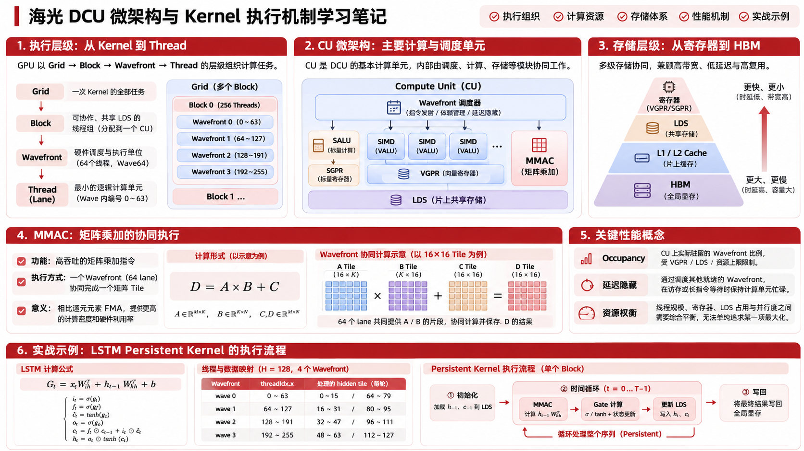

案例 1：LSTM Persistent MMAC Kernel 硬件协同拆解¶
七、结合 LSTM Persistent MMAC Kernel 理解硬件协同¶
这一部分结合之前的 H128 LSTM 项目进行理解。
需要说明：以下保留你原笔记中的线程配置、数据结构和计算思路，但尚未重新检查完整的 adaptive_lstm_hip.cu 源码，因此具体的 Batch 与 Wave 分工映射仍应以代码为准。
7.1 LSTM 的计算结构¶
LSTM 当前时间步依赖：
- 当前输入 \(x_t\)。
- 上一时间步 Hidden State \(h_{t-1}\)。
- 上一时间步 Cell State \(c_{t-1}\)。
主要矩阵计算为：
可以拆成两个部分。
Input Projection
在输入序列已知的情况下，各时间步的这部分矩阵计算不依赖先前的 Hidden State，因此可以提前批量计算。
Recurrent Projection
该部分依赖上一时间步的 Hidden State，必须遵循时间递推关系。
7.2 LSTM 为什么有四个 Gate？¶
对于 Hidden Size = H 的 LSTM：
它包含四个 Gate 的输入：
- Input Gate。
- Forget Gate。
- Cell Candidate。
- Output Gate。
随后计算：
这里的 \(\odot\) 表示逐元素乘法。
以 H128 为例：
- Hidden State 长度：128。
- Cell State 长度：128。
- Recurrent 输入矩阵长度：128。
- 四个 Gate 的总输出长度：512。
因此，Recurrent Projection 可以表示为：
具体矩阵是否带转置，应按照代码中的权重存储方式确认。
7.3 为什么使用 MMAC？¶
Recurrent Projection 的主要计算是矩阵乘法。
使用普通向量 FMA 虽然可以实现，但可能无法充分利用专门的矩阵计算能力。
MMAC 可以将矩阵计算组织为多个 Tile，由 Wavefront 协同执行。
例如，假设目标输出分块宽度为 16：
- 单个 Gate 的 128 个输出可以划分为 8 个 16 列 Tile。
- 四个 Gate 的 512 个输出总共对应 32 个 16 列 Tile。
这是你原笔记中需要补充的一个重要细节：
H128 划分为 8 个 16 列 Tile，描述的是 128 维范围；如果讨论四个 Gate 的完整 Recurrent 输出，则总维度是 512，需要考虑全部 32 个输出 Tile。
实际 Kernel 可能通过 Gate 融合、Batch 合并或者更大的 Wave Tile 调整计算组织，不能只根据 Hidden Size 推断整个循环次数。
7.4 为什么选择 256 个 Thread？¶
你之前的项目使用：
并以每 Block 256 个线程启动。
在 Wave64 模型下：
所以一个 Block 包含四个 Wavefront。
如果每个 Wavefront 负责一个 16 列输出 Tile，那么四个 Wavefront 在一个阶段可以覆盖四个 Tile。
例如对于某一 Gate 的 128 维输出：
Wave 0 → Tile 0：0～15
Wave 1 → Tile 1：16～31
Wave 2 → Tile 2：32～47
Wave 3 → Tile 3：48～63
下一轮：
Wave 0 → Tile 4：64～79
Wave 1 → Tile 5：80～95
Wave 2 → Tile 6：96～111
Wave 3 → Tile 7：112～127
但实际 Kernel 还可能同时处理多个 Batch 样本。
因此需要通过线程索引和输出地址计算，明确以下映射：
这一步应该成为后续分析该 Kernel 的重点。
7.5 为什么使用 LDS 保存 Hidden 与 Cell？¶
你原来记录的 LDS 数组包括：
可以分别理解为：
h_buf： 保存 Hidden State，双缓冲可以让上一时间步的输入与当前时间步的输出使用不同存储区域，避免覆盖仍需要读取的数据。
cell_lds： 保存 Cell State，用于下一时间步的更新。
recur_h： 保存 Recurrent 计算过程中需要跨线程共享或继续使用的中间结果。
这些数组的具体大小、数据布局以及读写顺序，决定 LDS 占用和同步开销。
7.6 Persistent Kernel 如何工作？¶

传统分步实现可以是：
而 Persistent Kernel 可以把整个时间循环留在一个长期运行的 Kernel 中：
Kernel 启动
│
├── Block 分配到 CU
│
├── Wavefront 创建并驻留
│
├── LDS 初始化 Hidden / Cell
│
└── 时间循环
│
├── t=0
│ ├── MMAC 计算 Recurrent
│ ├── Gate 计算与状态更新
│ └── 写回 LDS
│
├── t=1
│ ├── 从 LDS 读取上一时刻状态
│ ├── MMAC 计算 Recurrent
│ ├── Gate 计算与状态更新
│ └── 写回 LDS
│
└── ...
│
└── 最终结果写回 Global Memory
Persistent Kernel 的主要潜在收益包括：
- 减少逐时间步 Kernel Launch 开销。
- 在同一个 Kernel 中融合 Recurrent、Gate 和状态更新。
- 在 LDS 或寄存器中复用 Hidden/Cell 等中间状态。
- 减少不必要的全局显存读写。
- 减少重复的调度、初始化及部分数据准备成本。
但 Persistent Kernel 也有代价。
如果每个 Block 的 LDS 或寄存器占用过大，会降低 CU 上的并发驻留数量。
如果 Block 数量不足，还可能无法充分利用所有 CU。
因此 Persistent 方案并不是一定比非 Persistent 方案更快。
7.7 LSTM Kernel 中各组件如何协同？¶
可以把一次时间步计算拆分为：
第一步：Scheduler 调度 Wavefront
四个 Wavefront 根据 Kernel 的计算任务执行各自的矩阵 Tile。
第二步：VMEM/LDS 提供计算数据
从 LDS 读取上一时间步 Hidden State，加载或复用 Recurrent Weight。
第三步：VGPR 保存矩阵片段
输入数据按照 MMAC 所需 Layout 分布到寄存器。
第四步：MMAC 执行 Recurrent Projection
利用矩阵乘加指令计算对应的 Gate 输入片段。
第五步：VALU 与特殊数学指令完成 Gate 更新
执行 Sigmoid、Tanh、逐元素乘法与加法等操作。
第六步：LDS 保存新的 Hidden/Cell
通过必要的同步，确保下一个时间步读取到正确数据。
第七步：继续下一个时间步
Wavefront 保持在同一个 Kernel 中执行，直至序列处理完成。
7.8 LSTM Persistent Kernel 的优化重点¶
| 硬件组件 | 需要分析的内容 | 可能的优化方向 |
|---|---|---|
| Scheduler / Wavefront | 4 个 Wave 的工作划分与等待情况 | 调整 Wave 数和任务映射 |
| MMAC | 矩阵指令利用率与依赖关系 | 优化矩阵 Tile、提高指令并行度 |
| VGPR | 矩阵操作数和累加结果占用 | 控制寄存器压力、避免 Spill |
| LDS | Hidden/Cell/临时结果存储 | 优化布局、减少重复访问与同步 |
| VMEM | 权重加载和结果写回 | 提高数据复用、改善访存模式 |
| VALU / 特殊函数 | Gate、Sigmoid、Tanh | 计算融合、减少冗余操作 |
| CU | Block 驻留与整体利用率 | 平衡 Persistent 状态规模和并行度 |